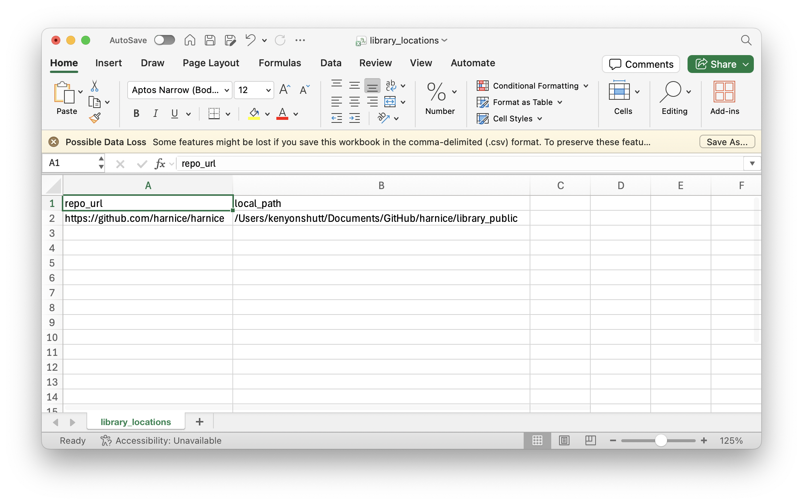

Installation
Option A) Install with pip
Install Harnice directly from PyPI:
if you need help with this, check out this guide about how to install pip, packages, and python
...or...
Option B) Clone and install locally
1. Clone the Repository
if you need help with this, check out the official git website, make an account on github, gitlab, or similar, and consult youtube for git help
2. Install Harnice from the locally-cloned repo
If installing on Windows, add to PATH
If you've done the above steps, you should be able to run Harnice immediately by typing into your command line:
However, in order to be able to type harnice -r directly, you'll need to add harnice to your PATH.
1. Copy the path to Harnice to your clipboard (C:../../../Harnice/)
If you installed with pip, this should give you a hint where all of your packages are installed. Go find Harnice inside and copy the path.
python -m site --user-base
If you git cloned the repo, you should already know the path to Harnice.
2. Edit your Environment Variables.
In the start menu, search for "environment variables".
Under "User variables" (top section), find and select "Path", then click "Edit"
Click "New" and paste the Scripts directory path from Step 1
Click "OK" on all windows to save
At this point you should be able to run harnice -r directly from your command line.
Configure Library Paths
Shortly after first install, you will be asked to create library_locations.csv in the root of your Harnice repository if it doesn't exist. The default will auto-generate in the Harnice repository root. Here's what the default content should be:
repo_url,local_path
https://github.com/harnice/harnice,/Users/kenyonshutt/Documents/GitHub/harnice/library_public

This is where you tell Harnice where the local paths to your external libraries are. The local_path points to where the library files live on your computer, but the repo_url should be traceable by your collaborators.
Install Supporting Applications
Make sure you have these applications installed for working with Harnice files: